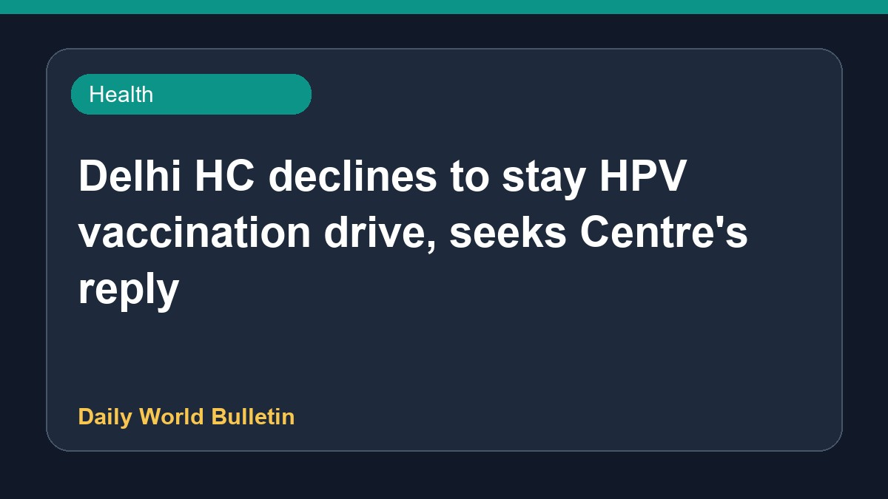

Delhi HC declines to stay HPV vaccination drive, seeks Centre's reply

The Delhi High Court has refused to issue a stay on the ongoing human papillomavirus vaccination drive. During the proceedings, the Centre assured the court that the vaccine is safe, reporting 120 adverse events out of nearly 5.6 million administered doses. While allowing the vaccination program to continue, the High Court has sought a formal response from the central government regarding the matter and advised caution concerning half-baked vaccines.
Original source: Health News Sources
Delhi HC declines to stay HPV vaccination drive, seeks Centre’s reply - The Hindu ↗
Delhi HC declines to stay HPV vaccination drive, seeks Centre’s reply - The Hindu ↗